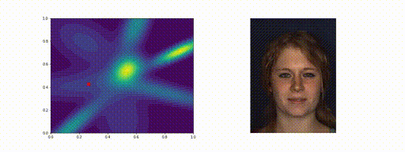
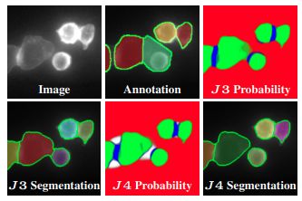
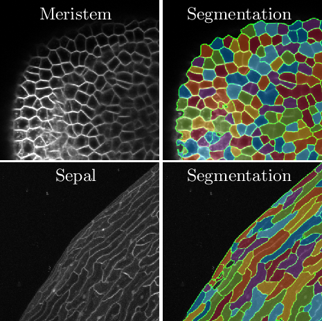
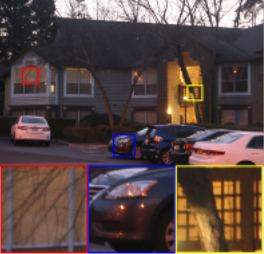
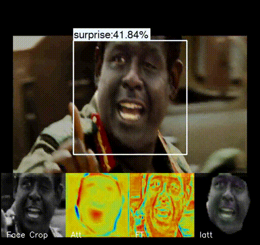
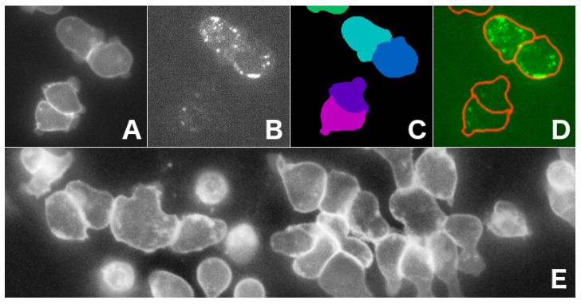

|

|
Deep Metric Structured Learning For Facial Expression Recognition
Pedro D. Marrero Fernandez, Tsang Ing Ren, Tsang Ing Jyh,
Fidel A. Guerrero Peña, Alexandre Cunha.
arXiv, 2020.
arXiv /
code /
abstract /
bibtex
We propose a deep metric learning model to create embedded sub-spaces with a well
defined structure. A new loss function that imposes Gaussian structures on the output
space is introduced to create these sub-spaces thus shaping the distribution of the
data. Having a mixture of Gaussians solution space is advantageous given its simplified
and well established structure. It allows fast discovering of classes within classes and
the identification of mean representatives at the centroids of individual classes.
@article{marrero2020deep,
title={Deep Metric Structured Learning For Facial Expression Recognition},
author={Marrero Fernandez, Pedro D and Ren, Tsang Ing and Jyh, Tsang Ing
and Guerrero Pe{\~n}a, Fidel A and Cunha, Alexandre},
journal={arXiv},
year={2020}
}
|
|

|
J Regularization Improves Imbalanced Multiclass Segmentation
Fidel A. Guerrero Peña, Pedro D. Marrero Fernandez, Paul T. Tarr,
Tsang Ing Ren, Elliot M. Meyerowitz, Alexandre Cunha.
arXiv, 2019.
arXiv /
video /
code /
abstract /
bibtex
We propose a new loss formulation to further advance the multiclass segmentation of
cluttered cells under weakly supervised conditions. We improve the separation of
touching and immediate cells, obtaining sharp segmentation boundaries with high
adequacy, when we add Youden's J statistic regularization term to the cross entropy
loss. This regularization intrinsically supports class imbalance thus eliminating the
necessity of explicitly using weights to balance training.
@article{pena2019j,
title={J Regularization Improves Imbalanced Multiclass Segmentation},
author={Pe{\~n}a, Fidel A Guerrero and Fernandez, Pedro D Marrero
and Tarr, Paul T and Ren, Tsang Ing and Meyerowitz, Elliot M
and Cunha, Alexandre},
journal={arXiv preprint arXiv:1910.09783},
year={2019}
}
|
|

|
A Weakly Supervised Method for Instance Segmentation of Biological
Cells
Fidel A. Guerrero-Peña, Pedro D. Marrero Fernandez, Tsang Ing Ren,
Alexandre Cunha.
Domain Adaptation and Representation Transfer and Medical Image Learning with Less
Labels and Imperfect Data. Springer, Cham, 2019.
paper /
arXiv /
abstract /
bibtex
We present a weakly supervised deep learning method to perform instance segmentation of
cells present in microscopy images. Annotation of biomedical images in the lab can be
scarce, incomplete, and inaccurate. Our method focuses on three aspects to improve
learning: a loss function operating in three classes, a contour-aware weight map model,
and careful data augmentation on edges.
@incollection{guerrero2019weakly,
title={A Weakly Supervised Method for Instance Segmentation of Biological Cells},
author={Guerrero-Pe{\~n}a, Fidel A and Fernandez, Pedro D Marrero
and Ren, Tsang Ing and Cunha, Alexandre},
booktitle={Domain Adaptation and Representation Transfer and Medical
Image Learning with Less Labels and Imperfect Data},
pages={216--224},
year={2019},
publisher={Springer}
}
|
|

|
Burst Ranking for Blind Multi-Image Deblurring
Fidel A. Guerrero Peña, Pedro D. Marrero Fernández, Tsang Ing Ren,
Jorge J.G. Leandro, Ricardo Nishihara.
IEEE Transactions on Image Processing, 2019.
paper /
arXiv /
abstract /
bibtex
We propose a new incremental aggregation algorithm for multi-image deblurring with
automatic image selection. We approach the multi-image deblurring problem as a two
steps process: first, we learn a comparison function to rank a burst of images using
a deep convolutional neural network. Then, incremental Fourier burst accumulation fuses
only less blurred images that are sufficient to maximize reconstruction quality.
@article{pena2019burst,
title={Burst Ranking for Blind Multi-Image Deblurring},
author={Pe{\~n}a, Fidel Alejandro Guerrero and Fern{\'a}ndez, Pedro Diamel Marrero
and Ren, Tsang Ing and Leandro, Jorge de Jesus Gomes
and Nishihara, Ricardo Massahiro},
journal={IEEE Transactions on Image Processing},
volume={29},
pages={947--958},
year={2019},
publisher={IEEE}
}
|
|

|
FERAtt: Facial Expression Recognition with Attention Net
Pedro D. Marrero Fernández, Fidel A. Guerrero Peña, Tsang Ing Ren,
Alexandre Cunha.
CVPR Workshops, 2019.
paper
/
arXiv /
code /
abstract /
bibtex
We present a new end-to-end network architecture for facial expression recognition with
an attention model. It focuses attention on the human face and uses a Gaussian space
representation for expression recognition. The architecture combines facial image
correction and attention with facial expression representation and classification.
@InProceedings{Fernandez_2019_CVPR_Workshops,
author={Marrero Fernandez, Pedro D. and Guerrero Pena, Fidel A.
and Ing Ren, Tsang and Cunha, Alexandre},
title={FERAtt: Facial Expression Recognition With Attention Net},
booktitle={The IEEE Conference on Computer Vision
and Pattern Recognition (CVPR) Workshops},
month={June},
year={2019}
}
|

|
Fast and Robust Multiple ColorChecker Detection using Deep
Convolutional Neural Networks
Pedro D. Marrero Fernández, Fidel A. Guerrero Peña, Tsang Ing Ren,
Jorge J.G. Leandro.
Image and Vision Computing, 2019.
paper /
arXiv /
code /
abstract /
bibtex
The objective of this work is to propose a new fast and robust method for automatic
ColorChecker detection. The process is divided into two steps: ColorChecker
localization using a detection convolutional neural network trained on synthetic images,
and ColorChecker patches recognition. The method is fast, robust to overlaps and
invariant to affine projections.
@article{MARREROFERNANDEZ2018,
title={Fast and Robust Multiple ColorChecker Detection
using Deep Convolutional Neural Networks},
journal={Image and Vision Computing},
year={2018},
issn={0262-8856},
author={Pedro D. Marrero Fern{\'a}ndez and Fidel A. Guerrero Pe{\~n}a
and Tsang Ing Ren and Jorge J.G. Leandro},
}
|
|

|
Multiclass Weighted Loss for Instance Segmentation of Cluttered Cells
Fidel A. Guerrero-Pena, Pedro D. Marrero Fernandez, Tsang Ing Ren,
Mary Yui, Ellen Rothenberg, Alexandre Cunha.
IEEE International Conference on Image Processing (ICIP), 2018.
paper /
arXiv /
abstract /
bibtex
We propose a new multiclass weighted loss function for instance segmentation of
cluttered cells. We present two novel weight maps applied to the weighted cross entropy
loss function which take into account both class imbalance and cell geometry. Binary
ground truth training data is augmented so the learning model can handle not only
foreground and background but also a third touching class.
@inproceedings{guerrero2018multiclass,
title={Multiclass weighted loss for instance segmentation of cluttered cells},
author={Guerrero-Pena, Fidel A and Fernandez, Pedro D Marrero
and Ren, Tsang Ing and Yui, Mary and Rothenberg, Ellen
and Cunha, Alexandre},
booktitle={2018 25th IEEE International Conference on Image Processing (ICIP)},
pages={2451--2455},
year={2018},
organization={IEEE}
}
|